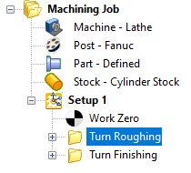
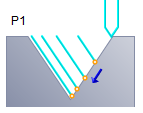
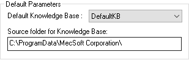

Save As Defaults allows you to set default parameters for machining operations. This allows the reuse of the machining parameters without having to enter the same parameters when creating new machining operations on same part or new part files.
To Save As Defaults:
Create or Select a machining operation under the Program tab in Machining Browser.  Step 1: Create or Select a Machining Operation |
Right mouse button click on a machining operation and select Save As Defaults.  Step 2: Save As Defaults |
This displays a Save As dialog when a default knowledge base is not specified under Set Machining Preferences. Specify a file name Click Save. This creates a default knowledge base for the profiling operation and is saved to the file name you chose. The saved knowledge base is then automatically set as the default knowledge base to load under Machining Preferences and the parameters defined in this knowledge base are used when creating new machining operations.
 Set Machining Preferences |
|
To create a new default knowledge base: a.Under Machining Preferences, change the Default Knowledge Base to load to Undefined.
b.Select a machining operation under the Mops browser, right mouse button click and select Save As Defaults. c.Specify a new file name and click Save. The saved knowledge base is now set as the default knowledge base to load under Machining Preferences and the parameters defined in the knowledge base is used when creating new machining operation.
|